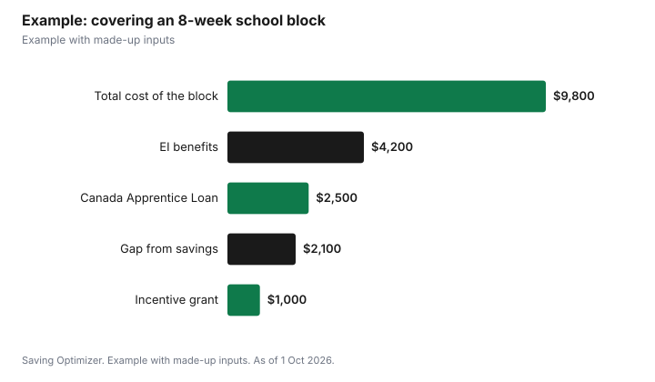

Education · Canada
What an Apprenticeship Costs in Canada, and the Loans and Grants That Cover It

An apprenticeship costs much less than most college or university programs because you earn wages on the job, but the in-school blocks bring real costs: classroom fees, tools, travel and weeks of lower income. In Red Seal trades outside Quebec, the Canada Apprentice Loan lends up to $4,000 interest-free for each period of technical training, for up to five periods, with no payments until you finish or leave. Federal grants add $1,000 per level for the first two levels and $2,000 when you certify. You may be able to collect EI during full-time school blocks, deduct part of the cost of tools, and, in Ontario, get a tools grant of $400 to $1,000 depending on your trade.
Key takeaways
- Canada Apprentice Loan: up to $4,000 per training period, up to 5 periods, interest-free.
- Apprenticeship Incentive Grant: $1,000 per level for the first two levels; taxable.
- Apprenticeship Completion Grant: $2,000 when you certify in a Red Seal trade; taxable.
- EI regular benefits may be paid during referred full-time technical training.
- Employed tradespeople can deduct part of new tools costs; Ontario adds a $400 to $1,000 tools grant.
- Example with made-up inputs: a $9,800 school block mostly covered by EI, a grant and a $2,500 loan.
Where the money goes
Apprenticeship costs vary by province and trade, so check your own training provider. The main costs are classroom or in-school fees for each level, books and supplies, tools and safety gear your employer requires you to provide, travel or living away from home if the school is far, and the income gap while you are in a full-time block and not earning your usual wage. The supports below are built around those costs.
| Cost | Supports to look at |
|---|---|
| In-school fees, books and supplies | Canada Apprentice Loan; provincial supports; tuition credit if eligible |
| Tools and equipment | Tradesperson's tools deduction; GST/HST rebate; Ontario Tools Grant |
| Lost wages during school blocks | EI regular benefits with a referral; Canada Apprentice Loan |
| Travel and living away from home | Canada Apprentice Loan; provincial benefits such as Ontario's Apprentice Development Benefit |
| Certification exam | Apprenticeship Completion Grant; tuition credit for eligible licensing exam fees |
The Canada Apprentice Loan
The federal government says the Canada Apprentice Loan helps you complete an apprenticeship in a designated Red Seal trade, with up to $4,000 in interest-free loans per period of technical training. You can use the money for tuition, tools, equipment and living expenses, to cover lost wages or to support your family. You make no payments and no interest builds until after you complete or leave your training. The loan is available everywhere except Quebec, which has its own support.
The Canada Apprentice Loan Service Centre adds the limits. You can borrow for up to five periods of technical training, and the loan stays payment-free for up to 312 weeks, or six years, while you are confirmed as registered in a Red Seal apprenticeship. You must be a Canadian citizen, permanent resident or protected person, be registered in a Red Seal trade, be enrolled in block-release or equivalent full-time technical training with an approved provider, and pass a credit check if it is your first application. You cannot get it while in high school, if you are registered in Quebec, or if you are receiving a Canada Student Loan for the same training.
| Item | Detail |
|---|---|
| Amount | Up to $4,000 per period of technical training |
| Number of periods | Up to 5 |
| Interest | None while in training; no interest until you complete or leave |
| Payment-free period | Up to 312 weeks (6 years) while registered |
| Trades | Designated Red Seal trades |
| Where | All provinces and territories except Quebec |
| Credit check | Required for first-time applicants |
Federal grants
The federal government lists the Apprenticeship Incentive Grant at $1,000 per year or level after you complete the first or second year in a designated Red Seal trade, and the Apprenticeship Completion Grant at a lifetime $2,000 for registered apprentices who complete their training and get journeyperson certification. The CRA says both are taxable and reported from box 105 of your T4A, and sums them up as up to $4,000 in grants. The Apprenticeship Incentive Grant for Women pilot ended on 31 March 2023.
EI during school blocks
If your province or territory refers you to full-time technical training, Service Canada says you may receive EI regular benefits while you attend. You need a 16-digit reference code for each block, you serve the one-week waiting period only once for the same apprenticeship, and if you are on leave from your job for the block, benefits end on the last day of the course. In 2026, EI pays 55% of average insurable weekly earnings up to $729 a week. See EI and going back to school.
Tools: the deduction, the rebate and Ontario's grant
Employed tradespeople can deduct part of the cost of new tools their employer requires them to provide, with the employer certifying on Form T2200. On its page for 2024, the CRA gives the maximum as the lesser of $1,000 and the cost of eligible tools minus $1,433 (or your trade employment income plus apprenticeship grants, if lower). In the CRA's example, an electrician who spent $2,500 deducts $1,000. That page shows 2024 figures, so check the threshold for your own tax year. You may also be able to claim a GST/HST rebate on the tools. Phones and computers generally do not qualify.
| Support | Amount or purpose |
|---|---|
| Tools Grant, motive power trades | $1,000 (taxable) |
| Tools Grant, construction or industrial trades | $600 (taxable) |
| Tools Grant, service trades | $400 (taxable) |
| Apprentice Development Benefit | Help with living, dependant care, commuting and living-away costs during full-time in-class training |
| Apprenticeship Completion Bonus (non-Red Seal trades) | $2,000 (taxable) |
Ontario says you qualify for the Tools Grant if you completed or were exempted from level one in-class training on or after 1 April 2020, have a registered training agreement and have been registered as an apprentice for at least 12 months. Other provinces have their own programs, so check your apprenticeship authority.
Example with made-up inputs
These numbers are an example with made-up inputs. Taylor, a first-year electrical apprentice in Ontario, attends an 8-week school block. Costs: $1,400 of fees, books and supplies, $400 of travel, and $8,000 of wages Taylor would normally earn, for $9,800. Taylor's EI referral pays $600 a week for 7 weeks after the one-week wait ($4,200). Taylor borrows $2,500 from the Canada Apprentice Loan, interest-free. After finishing level one, Taylor receives the $1,000 incentive grant. The remaining $2,100 gap is covered from savings, and the loan waits until Taylor completes the apprenticeship.
| Item | Amount |
|---|---|
| Fees, books and supplies | $1,400 |
| Travel | $400 |
| Wages not earned during the block | $8,000 |
| Total cost of the block | $9,800 |
| EI (7 weeks at $600) | −$4,200 |
| Canada Apprentice Loan (repaid later) | −$2,500 |
| Apprenticeship Incentive Grant | −$1,000 |
| Gap from savings | $2,100 |

Steps
- Register as an apprentice with your provincial authority and confirm your trade is Red Seal.
- Ask for your EI reference code before each full-time school block.
- Apply for the Canada Apprentice Loan online before or during each block.
- Apply for the incentive grant after levels one and two, and the completion grant when you certify.
- Ask your employer to complete Form T2200 for required tools, and keep receipts.
- Check provincial supports, such as Ontario's Tools Grant and Apprentice Development Benefit.
For exam fees, see licensing exam fees and the tuition credit. For student loan interest, see line 31900, which also covers Canada Apprentice Loans.
Sources
- Employment and Social Development Canada, Canada Apprentice Loan and Grants and funding for skilled trades and apprenticeship, canada.ca (Wayback copies of pages modified 2 and 3 Jun 2026), as of 1 Oct 2026.
- Canada Apprentice Loan Service Centre, Canada Apprentice Loan Basics, pca-cal.ca, as of 1 Oct 2026.
- Employment and Social Development Canada, Employment Insurance for apprentices, canada.ca (Wayback copy), as of 1 Oct 2026.
- Canada Revenue Agency, Guide P105 Students and Income Tax 2025 (apprenticeship grants), and Line 22900 Employed tradespersons (tools deduction, 2024), canada.ca (Wayback copies), as of 1 Oct 2026.
- Government of Ontario, Financial supports for apprentices and sponsors, ontario.ca, as of 1 Oct 2026.
- The apprentice's costs, wages and benefit amounts in the example are an example with made-up inputs.
Frequently asked questions
How much is the Canada Apprentice Loan?
Up to $4,000 interest-free per period of technical training, for up to five periods, in Red Seal trades outside Quebec.
When do I repay the Canada Apprentice Loan?
No payments or interest until you complete or leave your training. It can stay payment-free for up to six years while you are registered.
How much are the federal apprenticeship grants?
$1,000 per level for the first two levels under the Apprenticeship Incentive Grant, and $2,000 under the Apprenticeship Completion Grant. Both are taxable.
Can apprentices get EI during school?
Yes, if referred to full-time technical training, with a 16-digit reference code for each block and one waiting week per apprenticeship.
Can I deduct the cost of my tools?
Employed tradespeople can deduct part of the cost of new required tools. For 2024 the CRA's maximum was the lesser of $1,000 and tool costs minus $1,433.
How much is Ontario's Tools Grant?
$1,000 for motive power trades, $600 for construction and industrial trades and $400 for service trades.
Researched and drafted with AI assistance and fact-checked against official Canadian sources. How we create content.
Disclosure: Saving Optimizer may earn a commission if a partner link is added later, such as a tool retailer offer type. No partnership is claimed on this page. Education only, not tax advice.